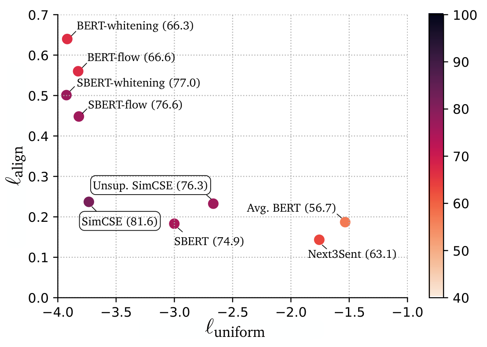
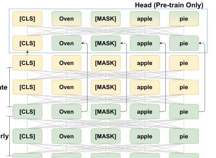
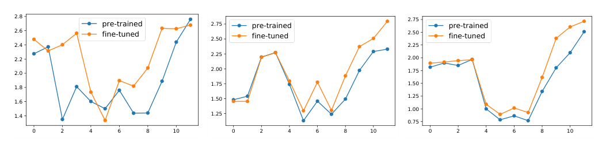
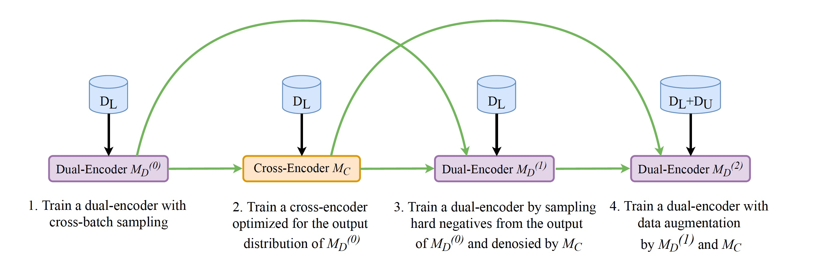

无监督对比检索三部曲：SimCSE / Contriever / Condenser + coCondenser¶
paper：SimCSE (EMNLP 2021) · Contriever (TMLR 2022) · Condenser (EMNLP 2021) · coCondenser (ACL 2022) code：princeton-nlp/SimCSE · facebookresearch/contriever · luyug/Condenser refs：Wang & Isola 2020 alignment/uniformity · ICT (Lee et al. 2019) · DPR (Karpukhin 2020) · MoCo (He 2020) · Funnel Transformer backbone：BERT-base/large、RoBERTa-base/large、mBERT/XLM-R（Contriever 多语版） date：SimCSE 2021-04；Contriever 2021-12；Condenser 2021-04；coCondenser 2021-08 modality：文本（句向量 / 段落检索） languages：以英文为主；mContriever / multilingual-SimCSE 覆盖多语
本文把 BERT 出来「不能直接做嵌入」的病灶 讲透：SimCSE 从对齐-均匀几何角度纠偏；Contriever 用随机裁剪 + MoCo 队列把弱监督对比推到能与 BM25 平齐；Condenser / coCondenser 从架构 + 语料级对比预训练给出结构性解法。这三条线共同构成后续 E5 / BGE / LLM-Embedding 的地基。
一句话定位¶
三篇论文都在解决同一个问题：BERT 出来的 CLS / mean-pool 向量各向异性、无法直接用于检索。区别在切入点：
| 论文 | 切入点 | 核心机制 |
|---|---|---|
| SimCSE | 微调阶段的对齐-均匀（Wang & Isola 2020） | Dropout 当噪声的无监督对比；NLI 蕴含+矛盾监督 |
| Contriever | 预训练+微调共同的无监督对比 | 独立裁剪构造正对 + MoCo 队列扩负例 |
| Condenser | 预训练架构不合适——CLS 中间层「休眠」 | 早/晚双分支 + Head，强迫 CLS 主动聚合信息 |
| coCondenser | Condenser + 语料级对比预训练 | 同文档两个 span 为正、跨文档为负；warm-up 检索空间 |
三者的关系是 正交、可叠加：Condenser/coCondenser 改预训练、SimCSE 改微调损失、Contriever 改无监督对比配方；BGE C-Pack 后来把 RetroMAE（Condenser 思想的继承）+ 弱监督对比 + 监督对比拼成一条完整流水线。
谱系与位置¶
BERT-MLM
├─(改预训练架构)─→ Condenser ──→ coCondenser ──→ RetroMAE / DupMAE ──→ BGE C-Pack / BGE-M3
├─(改微调损失) ─→ SimCSE (unsup + NLI) ──→ Sentence-BERT+SimCSE ──→ E5 / BGE 都在用
└─(改无监督对比配方) ─→ Contriever ──→ mContriever ──→ E5 / GTE 的弱监督阶段
后续 2023–2024 主流嵌入模型几乎都在这三条线的组合上迭代：
- E5：弱监督对比（Contriever 血脉）+ 大规模半结构化对（CCPairs）+ 监督微调（NLI + MS-MARCO）
- BGE C-Pack / BGE-M3：RetroMAE 检索预训练（Condenser 血脉）+ 弱监督对比 + 监督对比 + 自蒸馏
- LLM2Vec / gte-Qwen / QZhou-Embedding：把 BERT 换成 Decoder LLM，但训练配方仍是 SimCSE + Contriever + Condenser 的合成
Wang & Isola 的对齐-均匀几何¶
三篇文章的分析工具都是 Wang & Isola 2020 提出的两个度量：
在单位球面上，\(\ell_{\text{align}}\) 越小表示同义样本越紧、\(\ell_{\text{uniform}}\) 越小表示表示越均匀（各向异性越弱）。它们与 InfoNCE 的渐近极限刚好对上：
第一项对齐正对、第二项打散所有点。SimCSE 论文明确用这两个坐标画训练轨迹（见下文 Figure 3）；Contriever 与 Condenser 尽管没画同一张图，但结论一致：BERT 原生表示是「对齐可以，均匀极差」，导致 cosine 相似度普遍偏高、无法在 ANN 索引里区分。
SimCSE：Dropout 当噪声 + NLI 监督¶
无监督：对同一句话两次前向，让 dropout 造两份「视图」¶
给定句子 \(x_i\)，同一 encoder 前向两次，dropout mask 分别为 \(z, z'\)，得到两个不同的向量 \(h^{z_i}_i, h^{z'_i}_i\)。它们互为正对，同 batch 其它句子为负例：
- \(\mathrm{sim}(\cdot,\cdot)\) 用余弦相似度，\(\tau=0.05\)。
- 训练数据只是 10^6 条 Wikipedia 随机句子，不需要任何标注对。
- BERT-base 上 STS-B 从原始 pooling 的 ~60 分左右直接拉到 82.5（Spearman）。
这份「无监督」的关键是不再依赖离散数据增强（词删/词替换）。论文 Table 1 显示：随机 crop 20%、删词 10%、同义词替换、MLM 替换的 STS-B 都不如什么都不做只靠 dropout；一旦把 dropout 关掉（p=0）或者 fix 两次一样的 mask，STS-B 直接崩到 43.6。
为什么 dropout 有效：对齐-均匀轨迹¶
SimCSE 在 STS-B 上每 10 步画一次 \((\ell_{\text{align}}, \ell_{\text{uniform}})\)，得到如下轨迹：

- Fixed 0.1（两次前向共用同一份 dropout mask）：对齐完美（\(\ell_{\text{align}} \to 0\)）但均匀性几乎不动 —— 相当于告诉模型「同一句就是同一句」，学不到区分性。
- No dropout（关掉 dropout）：与 Fixed 0.1 表现类似，representation collapse。
- Delete one word（随机删一个词）：均匀性有进步但同时把对齐性也搞坏了。
- Unsup. SimCSE：均匀性和对齐性同时改善，训练全程都在往左下角走。
理解方式：dropout 是表征空间上的最小扰动，等于给 encoder 加了一层「同一句的一致性正则」；而删词是语义空间上的扰动，直接把正对拉开。前者只降均匀性、不损对齐性，是无监督 InfoNCE 需要的正对生成方式。
有监督：NLI 蕴含当正对、矛盾当难负例¶
进一步引入 SNLI + MNLI 中的三元组 \((x_i, x_i^+, x_i^-)\)：
- \(x_i\)：premise
- \(x_i^+\)：entailment hypothesis（正对）
- \(x_i^-\)：contradiction hypothesis（难负例）
损失变为：
- 只用 entailment：STS-B 84.9
- 加 contradiction 作难负：STS-B 86.2
- 加 ANLI 或再加无监督 SimCSE：没有额外增益（说明这批数据里矛盾对已经把「难度」堆满了）
- 双塔（\(f_{\theta_1}, f_{\theta_2}\)）反而掉到 84.2 —— 与后续 E5 / BGE 的「双塔共享编码器」结论一致
数据集与评测¶
| 类别 | 用途 | 规模 |
|---|---|---|
| Wikipedia 句子 | 无监督预训练 | 10^6 条随机采样 |
| SNLI + MNLI | 监督对比 | 314k entailment 对 + 314k contradiction 对 |
| STS12-16, STS-B, SICK-R | 主评测 | 7 个语义相似度数据集，Spearman 相关系数 |
| SentEval Transfer | 迁移评测 | 7 个短句分类任务（MR / CR / SUBJ / MPQA / SST-2 / TREC / MRPC） |
结果：BERT-base + Unsup. SimCSE 在 7 个 STS 上均值 76.3（前 SOTA 72.1）；BERT-base + Sup. SimCSE 81.6（前 SOTA 79.4）。RoBERTa-large + Sup. SimCSE 达 83.8，2021 年 STS 无敌手。
对后续工作的辐射¶
- Sentence-BERT 后续版本：把 SBERT 微调 loss 换成 SimCSE-style 对比 + NLI 三元组
- E5 stage 2：CCPairs 弱监督预训练之后，用 NLI + MS-MARCO 做「SimCSE-式监督对比 + hard neg」
- LLM2Vec / QZhou-Embedding / Conan-v2：Decoder 骨干加双向注意力后，第三步就是 SimCSE
- Dropout 温度组合的经验值：\(\tau=0.05\)、
hidden_dropout=0.1是后续绝大多数嵌入训练的默认起点
Contriever：无监督随机裁剪 + MoCo 队列¶
Contriever 走的是另一条路：不给你标注，能不能直接把双塔 BERT 训成一个可用检索器？答案是可以，前提是正对构造 + 负例池两件事都做对。
正对：Independent Cropping 优于 ICT¶
给定一篇文档，Contriever 独立采样两段 span \(q, k^+\)，两段都是 连续的 token 序列，二者可以有 overlap。对比之前主流的 ICT（Inverse Cloze Task，一段小 span 作 query、其补集作 key）：
- ICT：query 与 key 互斥、且 query 通常更短，一开始就把 q/d 长度分布拉开
- Independent Cropping：两段独立采样，长度分布对称、有 overlap，鼓励网络学到「近似词面命中」这一 BM25 式的能力
论文 Section 6 消融显示：Cropping > ICT，尤其在 BEIR 的词面为主的数据集（Fever、Trec-COVID）上差距明显。
此外 Contriever 还会对 query 与 key 分别 随机删 10% 的 token，作为额外扰动。
负例：In-batch → MoCo Queue¶
InfoNCE 对负例池大小敏感（Chen et al. 2020）。Contriever 用 MoCo 把负例池从「batch 内」扩到「跨 batch 队列」：
- 维护一个大小 \(K\) 的 FIFO 队列，装着过去若干 batch 的 key 表示
- Query encoder \(f_{\theta_q}\) 用 SGD 反向传播更新
- Key encoder \(f_{\theta_k}\) 用动量 EMA 更新：
其中 \(m \in [0,1]\)。论文取 \(m=0.999\)、\(K=131{,}072\)，等于每一步 InfoNCE 都能看到十几万个负样本，而 GPU batch 只需要几百。
数据与训练¶
| 项 | 内容 |
|---|---|
| 骨干 | BERT-base uncased（1.1 亿参）；共享 encoder |
| 池化 | 最后一层隐状态平均池化 |
| 相似度 | dot product（未归一化） |
| 训练语料 | Wikipedia + CCNet，各占 batch 一半 |
| Batch size | 1024（配 MoCo，等效负例数 ≈ 130k） |
| 训练步数 | 500k |
| 数据增强 | Independent cropping + 10% token deletion |
评测：无监督首次接近 BM25 的稠密检索器¶

在 BEIR 15 个数据集的 Recall@100 上，无监督 Contriever 与 BM25 打平（少数场景 Trec-COVID、Touché-2020 输）：
- BEIR 平均 nDCG@10：Contriever 25.4，BM25 41.7 —— 排序仍不如 BM25，但 Recall@100 相当，作为召回层已经可用
- 微调后（MS-MARCO fine-tune）：Contriever 平均 nDCG@10 拉到 40.7，与 TAS-B、Splade v2 同档
- 多语（mContriever）：mMARCO + Mr.TyDi 上超过之前多语稠密检索器
消融的两点关键结论¶
- 共享 encoder 对零样本迁移更好：DPR-style 双编码器（q/d 独立）在 in-domain 强，但换域会显著掉；共享 encoder（Contriever / SimCSE / SBERT）在零样本 BEIR 上稳。
- MoCo 队列的关键是「大」，不是「新」：MoCo 与「近期的 in-batch cache」相比，主要收益来自 K 拉到 10^5 级别，而不是 momentum 本身。
对后续工作的辐射¶
- E5：把 CCPairs 当作「Contriever-式弱监督对比」的更大数据源，正对不再靠随机裁剪而是靠半结构化配对
- BGE-M3 / BGE C-Pack：预训练阶段用 RetroMAE，弱监督用 100M+ 弱对 + in-batch MoCo；本质是 Contriever + Condenser 的合成
- 多语嵌入的标准起点：几乎所有多语开源嵌入模型（mContriever、multilingual-e5、bge-m3）都用了 mContriever 的正对配方
Condenser：CLS 结构性预训练¶
SimCSE 和 Contriever 都在动目标函数；Condenser 说：问题不在损失，在架构 + 预训练配方本身。
病灶：BERT 的 CLS 在中间层「休眠」¶
论文引 Clark et al. 2019 的注意力分析：
- BERT 中间层里，CLS 的注意力模式与普通 token 没有本质差别，其它 token 也基本不 attend CLS。
- CLS 唯一「发挥作用」的时机是最后一层 —— 为了做 NSP 任务，才展开全局注意力。
结论：CLS 大部分时间处于闲置状态。要拿它做稠密表示，微调时得同时干两件事：一是学句义，二是把 CLS 「唤醒」为聚合器。低资源场景下，微调步数根本不够支付「唤醒 CLS」的成本 —— 这就是双塔难训的一个根因。
架构：早/晚 backbone + Condenser Head¶
Condenser 是一个把 Transformer 分成三段的架构：

- Early backbone（\(L_e\) 层）：与 BERT 一致，输出 \([h^{\text{early}}_{\text{cls}}; h^{\text{early}}]\)
- Late backbone（\(L_l\) 层）：继续在这个基础上编码，输出 \([h^{\text{late}}_{\text{cls}}; h^{\text{late}}]\)
- Condenser Head（\(L_h\) 层）：接收一对 [晚 CLS ; 早 token] 的拼接，做 MLM 预测
关键设计：token 表征从 early 层短路进 Head，但 late 层的信息只能通过 late CLS 一个向量传进去。要想 MLM 能预测被 mask 的 token，late CLS 必须把 late backbone 学到的东西「压缩」进去 —— 这是 Condenser 的名字来源，也是 CLS 被强制「一直在工作」的原因。
微调时把 Head 丢掉，剩下的 backbone 与 BERT 结构完全一致，可以热替换 BERT 权重。
冷启动技巧：约束 late 层不能崩¶
作者不想从零训 Condenser（算力预算不够），选择用 BERT 权重初始化 backbone、随机初始化 Head。但随机 Head 的梯度会把 backbone 权重带偏，因此额外加一份 late 层的 MLM 约束：
总损失 \(\mathcal{L} = \mathcal{L}_{\text{mlm}} + \mathcal{L}^{c}_{\text{mlm}}\)，投影矩阵 \(W\) 共享。这让 late 层至少还能做 BERT 原来的 token 预测，不会因 Head 的乱梯度而崩坏。
训练与验证¶
- 配置：\(L_e = L_l = 6\)、\(L_h = 2\)；BERT-base 初始化；Wikipedia + BookCorpus；4× 2080Ti 训练约 1 周
- 验证目标：
- 低资源场景 STS-B / Wiki Section Distinction：Condenser > 直接微调 BERT
- MS-MARCO / NQ / TQA：Condenser + 单轮硬负 ≈ ANCE 多轮 hard neg + 蒸馏
论文 Figure 2 画了 MS-MARCO 的训练 loss 曲线：Condenser 早期 loss 就低于 BERT，且下降更快、更稳，佐证「结构就绪度更好」的说法。

上图对比 BERT / Condenser / ICT 三种初始化在 MS-MARCO 上的训练 loss。Condenser 在起步阶段就明显低于 BERT，全程稳定下降；ICT 起点略低但很快追平 BERT 而不能持续压低。低数据场景下 Condenser 的优势更大 —— 少量微调数据不够把 BERT 的 CLS 从「休眠」拉起来，但足够让 Condenser 微调出可用的检索器。
与 BERT / ICT 的注意力对比（Sec 5）¶
论文用「CLS 关注哪些 token」的注意力熵作定量分析：
- BERT：CLS 在 middle layer 熵很高（乱看），只在 last layer 才聚焦
- ICT 预训练后：整体注意力被推向「查询相关词」，但 CLS 依然只在 last layer 聚焦
- Condenser：CLS 在中间层已经开始有明显的信息聚合模式 —— 与训练目标要求 CLS 一直在工作直接对应
coCondenser：语料级对比 + Gradient Cache¶
Condenser 解决了 CLS 结构性问题，但没解决另一件事：CLS 之间的内积仍然没有语义 —— MLM 只教它「你能预测被 mask 的 token」，并没有教它「不同文档的 CLS 应互相远离」。RocketQA、DPR 等把这一步塞到「大 batch 微调」里，但对普通算力条件不友好。
coCondenser 的主张：在预训练阶段就把语料级对比信号打进去，微调时只需要小 batch、不需要难负例挖掘。

上图对比 RocketQA 与 coCondenser 的训练路径：RocketQA 靠监督微调 + 大 batch + hard neg 去噪堆性能；coCondenser 把这套复杂度前移到无监督 corpus-aware 预训练里，微调阶段只需要一次 hard neg + 小 batch。
语料级对比损失¶
给一个 batch 里 \(n\) 篇文档 \([d_1, \dots, d_n]\)，每篇独立采样两段 span：
正对：\((s_{i1}, s_{i2})\) 同文档；负对：其它文档所有 span。用 CLS 池化后的表示 \(h^{\text{late}}_{\text{cls}}\)（Condenser 输出）做 InfoNCE：
预训练总损失 = \(\mathcal{L}_{\text{mlm}} + \mathcal{L}^{c}_{\text{mlm}} + \mathcal{L}_{\text{co}}\)。
Gradient Cache：小显存也能大 batch 对比¶
对比学习对 batch size 敏感，尤其 CLS 空间的 warm-up 需要 每个 batch 上千个负例。coCondenser 复用了 Gao et al. 2021b 的 gradient cache 技巧：
- 无梯度前向：先把整 batch 的所有 span forward 一遍，只算 CLS，不留计算图
- 算对比损失并对 CLS 求梯度：\(\partial \mathcal{L}_{\text{co}} / \partial h_{\text{cls}}\)
- 分块反向：把 batch 切成小 chunk，逐 chunk 重新 forward 并用第 2 步的 CLS 梯度做 backward，累加参数梯度
峰值显存 ≈ 一个小 chunk 的量，但每步梯度 == 大 batch 效果。用 4× 2080Ti 也能训 batch=2048 的 corpus contrastive。
检索效果：不再需要 RocketQA 那套复杂流水线¶
MS-MARCO Passage Ranking：
| 系统 | MRR@10 | R@1000 |
|---|---|---|
| BM25 | 18.7 | 85.7 |
| DPR | 31.1 | 95.2 |
| ANCE | 33.0 | 95.9 |
| RocketQA（heavy pipeline） | 37.0 | 97.9 |
| coCondenser（simple fine-tune） | 38.2 | 98.4 |
Natural Questions / TriviaQA 上同样与 RocketQA 打平，且训练成本约为 RocketQA 的 1/5。这份「预训练 warm-up 检索空间」的思路后来被 RetroMAE / DupMAE / BGE C-Pack 全面继承。
三篇的核心公式与数据集速览¶
| 论文 | 无标签数据 | 有标签数据 | 主要评测 |
|---|---|---|---|
| SimCSE | 10^6 Wiki 句 | SNLI + MNLI (314k entailment + 314k contradiction) | STS12-16 / STS-B / SICK-R；SentEval 迁移 |
| Contriever | Wikipedia + CCNet | MS-MARCO（可选 fine-tune） | BEIR 15 数据集；NQ / TQA 无监督 R@k |
| Condenser | Wiki + BookCorpus | MS-MARCO / NQ / TQA / STS-B | STS-B / Wiki Section；MS-MARCO / NQ / TQA |
| coCondenser | 目标语料（Wiki 或 MS-MARCO） | MS-MARCO / NQ / TQA | MRR@10 / R@k |
数据集简介¶
- STS-B（Semantic Textual Similarity Benchmark，2017）：8628 对短句 + 人工评分 0–5，Spearman 相关系数。是英文句向量事实上的验收集。
- SNLI + MNLI（斯坦福 + Multi-genre NLI）：570k + 433k 前提-假设-标签三元组，标签为 entailment / neutral / contradiction。词面重合率仅 39%，作为对比学习正对显著优于 QQP（60%）、ParaNMT（55%）。
- BEIR（Thakur et al. 2021）：18 个零样本检索数据集，覆盖 fact checking、citation、QA、法律、金融等；主指标 nDCG@10 与 Recall@100。是 Contriever 及后续所有稠密检索器的通用榜单。
- MS-MARCO Passage：约 880 万段落、80 万训练查询、约 400 万相关判定。检索训练与微调的默认数据。
- NaturalQuestions / TriviaQA（open-domain）：Wikipedia 上开放域 QA，评价 top-k 段落是否命中答案短语。
组合起来看：BGE / E5 是这三条线的合成¶
后续几个主流开源嵌入模型的训练流水线，用这三篇的语言可以完整拆解：
| 阶段 | E5 | BGE C-Pack / BGE-M3 | LLM2Vec / gte-Qwen2 / QZhou-Embedding |
|---|---|---|---|
| 预训练 | BERT + Continue MLM | RetroMAE（Condenser 血脉） | Decoder LLM 加双向注意力 + MNTP |
| 弱监督对比 | CCPairs（1.3B → 270M）+ InfoNCE + in-batch neg | 100M 弱对 + InfoNCE + in-batch / MoCo | 无监督 SimCSE（dropout 造正对） |
| 监督对比 | NLI + MS-MARCO + hard neg | 微调数据 + hard neg + 自蒸馏 | 监督 InfoNCE + hard neg（+ 蒸馏） |
三部曲对应到当前主流的位置：
- Condenser / coCondenser 的直接后代是 RetroMAE（把 Condenser Head 换成一个更彻底的「用 CLS 重建整段」目标）；BGE 全家桶都建在 RetroMAE 之上。
- Contriever 的直接后代是 E5 CCPairs、以及所有多语开源嵌入模型的弱监督阶段。
- SimCSE 的 dropout + NLI + contradiction hard-neg 组合被后续几乎所有句向量论文原封不动照抄，成为微调阶段的默认菜单。
常见错误用法¶
- 不加共享 encoder：SimCSE 明确显示双塔比单塔差 2 分；后续 BGE、E5、LLM2Vec 都保留单编码器。除非有明显的模态/语言差异，否则默认共享。
- 把 dropout 关小以为「更稳」：dropout
p=0.05会掉 1.4 分，p=0（关掉）会掉 11.4 分。Transformer 默认 0.1 就是最佳区间。 - 把 NLI 神经三分类当嵌入 loss：SNLI + MNLI 里的 entailment / neutral / contradiction 若拿去做 3-way 分类损失（SBERT 老配方），效果显著弱于把 entailment 当正、contradiction 当难负 —— 论文用同一批数据把 SBERT-NLI 从 78 拉到 86。
- 无监督对比不用共享 encoder + 队列：Contriever 消融显示，独立编码器 + 小 batch 是最差组合；共享 encoder + MoCo（或大 in-batch）才是稳定配方。
- 只做微调不做预训练 warm-up：Condenser 与 coCondenser 已证明，在数据不足或负例挖掘代价高时，warm-up 检索空间比堆微调复杂度性价比更高。这一结论到 2024–2025 的 NV-Embed、Snowflake Arctic 依然成立。
与本仓库既有报告的挂接¶
- 训练课表全景：见主文《Embedding 调研报告》第 5 章「训练与数据工程」与第 3 章「三种表示范式」。
- BGE C-Pack / BGE-M3 是 Condenser + Contriever + SimCSE 的合成实现：见 BGE-M3 三功能统一详解报告。
- E5 是 CCPairs（Contriever 风格弱监督）+ NLI + MS-MARCO（SimCSE 风格监督）：见 E5 详解。
- LLM 骨干上「Bi + MNTP + SimCSE」直接对应本三部曲的第 1、3 步：见 LLM2Vec 详解。
- 难负例的工业细节（假负、刷新、回归）：见 难负例挖掘工业实践。
本报告基于四篇原论文（SimCSE / Contriever / Condenser / coCondenser）及其官方开源实现整理，公式与图片均取自 arXiv HTML / PDF 原文。